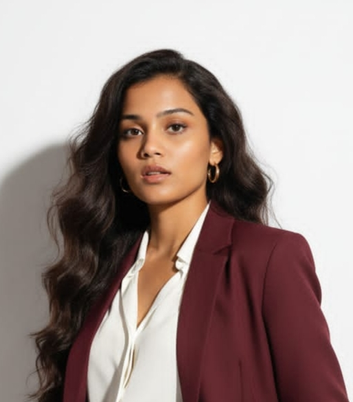
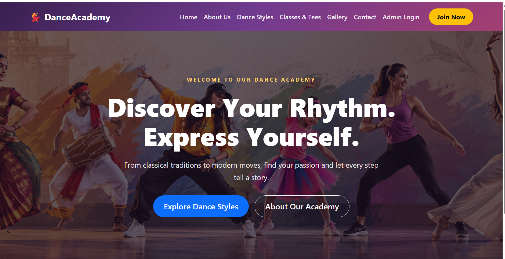
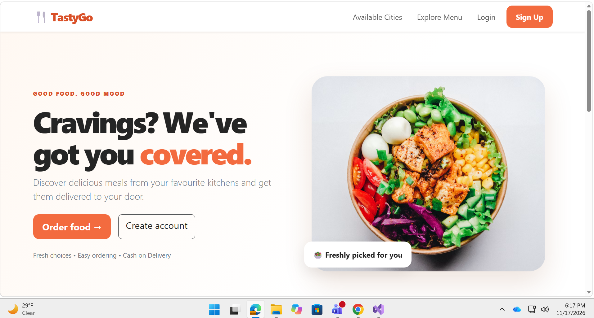
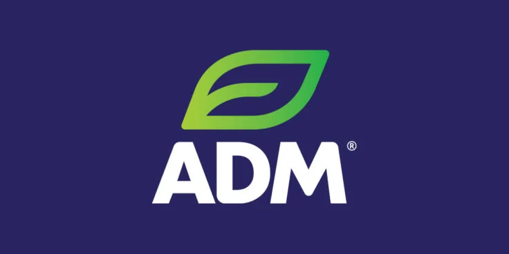

C#
Development
C# · .NET Framework · ASP.NET MVC · ASP.NET Core MVC · REST APIs
HELLO, I'M
An experienced technology professional with 4.6+ years at Tata Consultancy Services (TCS), specializing in enterprise application modernization, .NET and Azure.

01 / ABOUT ME
I enjoy turning complex application challenges into reliable, maintainable solutions.
I'm an Application & Systems Engineer with 4.6 years of experience at Tata Consultancy Services, supporting enterprise applications for Archer Daniels Midland (ADM).
My work spans application modernization, .NET framework upgrades, Azure migration support, authentication and security enhancements, deployments, troubleshooting and production hypercare.
I learn new technologies quickly, collaborate closely with stakeholders and care about delivering stable solutions that make a real difference.
Explore my résumé ↗02 / TOOLKIT
Technologies I use to build, modernize and support applications.
C# · .NET Framework · ASP.NET MVC · ASP.NET Core MVC · REST APIs
Microsoft Azure · Azure AD · OAuth 2.0 · RBAC · Key Vault
Microsoft SQL Server · IBM DB2 · Entity Framework
Visual Studio · IIS · Azure DevOps · CI/CD · Git · TFS · Swagger
03 / PROFESSIONAL EXPERIENCE
Enterprise application development, modernization and delivery.
Developer – Enterprise Applications
Supported and modernized enterprise web applications for ADM, a global food and agriculture client.
04 / SELECTED WORK
A mix of enterprise experience and hands-on web development.

A dance academy management website featuring class information, student enquiries and admin workflows for enrolment management.
View source ↗
A responsive food ordering website concept with menu browsing, cart, login, registration and payment interface screens.
View source ↗
ENTERPRISE MODERNIZATIONContributed to enterprise application framework upgrades, Azure migration support, security enhancements and production rollout activities for ADM.
Professional experience05 / RECOGNITION
06 / CONTACT
I'm open to opportunities in application development, .NET and Azure engineering.
Let's connect ↗